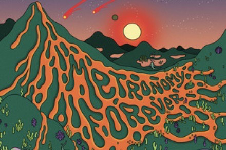

Breakfast • Wednesday, Semptember 31st @ 9:30 PM EDT
I want to host a conversation about sustainability and draw attention to environmental sustainability and climate action, as well as social sustainability that entails issues like poverty, food security, and healthcare. Sustainability is a fairly broad topic so there's a lot of room for the conversation to develop (which I find can make for a very interesting discussion). I would also love to be able to share some eco-friendly tips and swaps that I have, talk about my experience with vegetarianism, fast-fashion, and advice for college students on getting involved in sustainability, especially on college campuses. There's also a lot to talk about in relation to current events by talking about the importance of diversity and inclusivity in sustainability (depending on how deep or surface level the conversation decides to go and what the other students are interested in talking about).
Try to craft in your imagination what your character will be like. What’s their job onboard? What are their intentions (glory, adventure, treasure)? Look up the D&D alignment chart - where do you land?
Columbia University • 2022
Sociology
Robert Lotreck grew up in woodsy Tolland, Connecticut. Starting out as a Math/Computer Science major, it took him 3 semesters to realize his academic passion was Sociology. Primarily involved in sports his whole life, drumming only became a serious interest during senior year of high school.